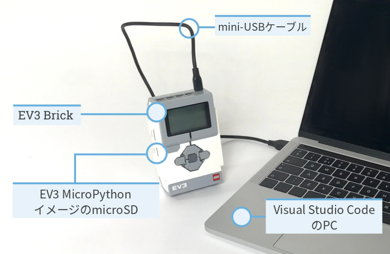
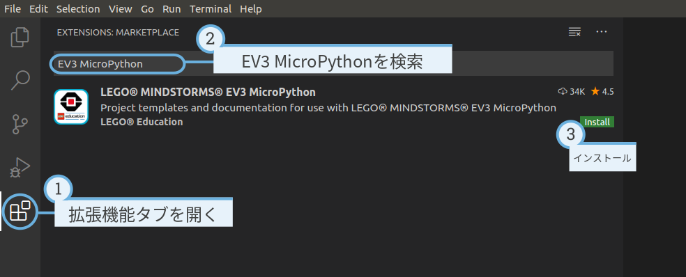
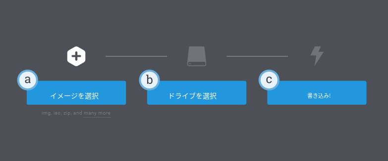

インストール¶
このページでは、プログラミングを始めるために必要なものを集めて インストールする手順を説明します。
必要なもの¶
始めるには、以下のものが必要です。
Windows 10またはMac OSのコンピューター
インターネット接続と管理者権限
これらが必要なのはインストール中だけです。その後プログラムを書いて 実行するときに特別な権限は必要ありません。
microSDカード
容量が4GB以上32GB以下のカードが必要です。このタイプのmicroSDカードは microSDHCとも呼ばれます。Application Performance Class A1のカードを おすすめします。
コンピューターのmicroSDカードスロットまたはカードリーダー
コンピューターに(micro)SDカードスロットがない場合は、外付けの USB (micro)SDカードリーダーを使えます。
EV3セットに付属しているようなmini-USBケーブル
この機器の典型的な構成を Figure 1にまとめました。

Figure 1 セットアップの概要
コンピューターの準備¶
MicroPythonプログラムはVisual Studio Codeを使って書きます。以下の手順で このアプリケーションをダウンロード、インストール、設定してください。
- Visual Studio Codeをダウンロードします。
- 画面の指示に従ってアプリケーションをインストールします。
- Visual Studio Codeを起動します。
- 拡張機能タブを開きます。
- Figure 2のようにEV3 MicroPython拡張機能をインストールします。

Figure 2 Visual Studio Codeのマーケットプレイスから拡張機能をインストールする
microSDカードの準備¶
EV3 BrickでMicroPythonプログラムを実行できるようにするため、必要なツールを microSDカードにインストールする方法を説明します。
microSDカードに残したいファイルがある場合は、先に内容のバックアップを 作成してください。 必要に応じて、以前のMicroPythonプログラムをバックアップする方法は EV3上のファイルの管理を参照してください。
この手順では、以前のMicroPythonプログラムを含むmicroSDカード上の すべての内容が消去されます。
microSDカードにMicroPythonツールをインストールするには:
EV3 MicroPython microSDカードイメージをダウンロードし、わかりやすい場所に保存します。このファイルは約360MBです。ファイルを解凍する必要はありません。
EtcherなどのmicroSDカード書き込みツールを ダウンロードしてインストールします。
microSDカードをコンピューターまたはカードリーダーに挿入します。
書き込みツールを起動し、画面の手順に従ってダウンロードした ファイルを書き込みます。Etcherを使う場合は、Figure 3のように 以下の手順に従えます。
- ダウンロードしたEV3 MicroPython microSDカードイメージファイルを 選択します。
- microSDカードを選択します。デバイスとサイズが使用するmicroSDカードと 一致していることを確認してください。
- 書き込みを開始します。数分かかることがあります。書き込みが完了するまで カードを抜かないでください。

Figure 3 Etcherを使ってEV3 MicroPython microSDカードイメージを書き込む